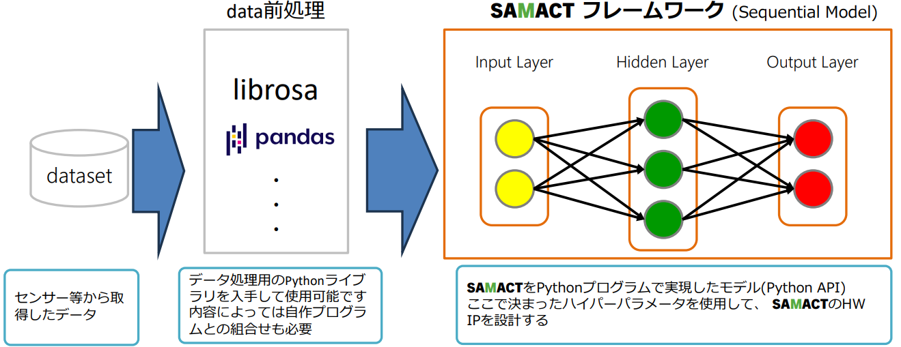

SAMACT Framework documentation
表紙
この文書はSAMACTのフレームワークのドキュメントです。
概要
SAMACTフレームワークは、下記に示すシステムのオレンジ色の枠線部分のAPIを提供します。
各層のユニット数など、ハイパーパラメータの調整が可能です。エッジAIシステムの検討にご利用ください。
SAMACTについては、下記をご参照ください。(当社Webサイト)

Fig. 1 SAMACT フレームワーク 概要
Tip
librosaは音声及び音楽の信号処理を行うためのオープンソースライブラリです。
Copyright(C) 2013-2023, librosa development team
Tip
pandasはデータ解析や操作を行うためのオープンソースライブラリです。
Copyright (C) 2011-2012, Lambda Foundry, Inc. and PyData Development Team All rights reserved.
Copyright (C) 2008-2011 AQR Capital Management, LLC All rights reserved.
本フレームワークはPythonインタプリタ上で動作することを想定しています。
HW動作するSNNと同一の計算を動かしているため、実行にある程度の時間がかかります。
想定環境については、Requirement を参照してください。
ご質問やフィードバックがあれば、https://github.com/maviss-design/SAMACT/issues にお願いします。
Quick Start Guide:
What is SAMACT?:
API Reference:
Revision History